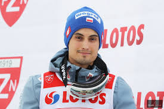
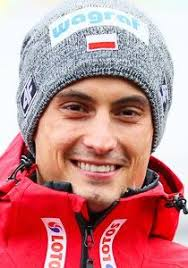
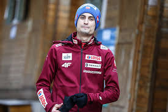

Maciej Kot

Maciej Kot – reprezentant Polski w skokach narciarskich, zawodnik klubu AZS Zakopane. Brązowy medalista zimowych igrzysk olimpijskich w Pjongczangu, w konkursie drużynowym. Złoty i brązowy medalista mistrzostw świata w drużynie. Zwycięzca zawodów Pucharu Świata oraz klasyfikacji generalnej Letniego Grand Prix.
Maciej Kot urodził się 9 czerwca 1991 roku w Limanowej, niedaleko Nowego Sącza. Ma 178 cm wzrostu i waży 61 kg. Reprezentuje barwy klubu AZS Zakopane, 13 grudnia 2007 roku debiutował w zawodach Pucharu Świata w Villach (35. miejsce). Swoje pierwsze podium wywalczył 11 grudnia 2016 roku w norweskim Lillehammer, zajmując II miejsce w konkursie. Na premierowe zwycięstwo czekał do 11 lutego 2017 roku, kiedy to okazał się najlepszy podczas zawodów w Sapporo. Maciej Kot stanowi o sile polskiej drużyny narodowej. Wielokrotnie wraz z kolegami sięgał po najważniejsze trofea, takie jak mistrzostwo świata w Lahti. Razem ze Stefanem Hulą, Dawidem Kubackim i Kamilem Stochem wywalczył medal na igrzyskach w Pjongczangu.
Brązowy medal igrzysk olimpijskich - Pjongczang 2018 (konkurs drużynowy), Złoty medal mistrzostw świata – Lahti 2017 (konkurs drużynowy), Brązowy medal mistrzostw świata – Val di Fiemme 2013 (konkurs drużynowy), 2 zwycięstwa w zawodach Pucharu Świata (stan: koniec sezonu 2017/18), 3 zwycięstwa w konkursie drużynowym Pucharu Świata (stan: koniec sezonu 2017/18), Zwycięstwo w klasyfikacji generalnej letniego Grand Prix (2016), Wicemistrzostwo świata juniorów (2008).
Maciej Kot jest jednym z najpopularniejszych polskich skoczków w mediach społecznościowych. Chętnie dzieli się z kibicami swoimi relacjami i zdjęciami na Instagramie. Jego profil obserwuje 150 tys. użytkowników.